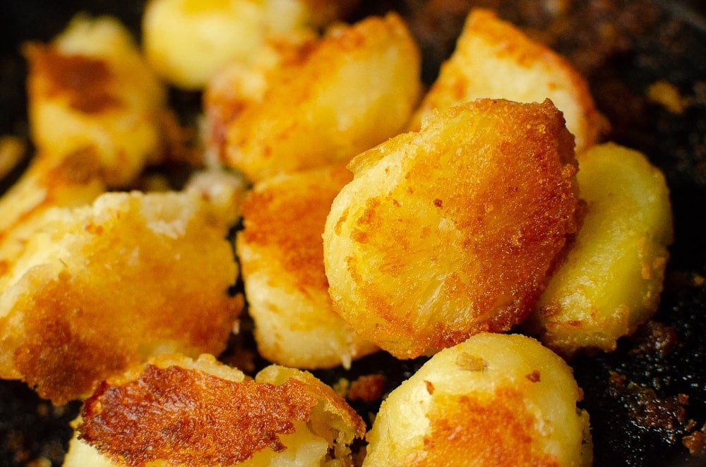

Roast Potatoes

The true stars of any roast dinner, roast potatoes hold a special place in my heart. They are the ultimate comfort food: no roast is complete without them.
My recipe takes spuds back to their basics. Nothing fancy: no special fat; no overbaring seasonings; no intricate tecniques. Just spuds, fat, salt, and pepper. Perfection.
Ingredients
- Potatoes. Ideally Marris Pipers or Yukon Golds
- Oil. Has to have a high smoke point: olive oil is a no go. Vegetable, rapeseed (canola for the Americans), or sunflower are good here.
- Salt and pepper.
Instructions
- Peel the potatoes and cut them into roughly even sized pieces. An average size potato should be cut into roughly 4, but the main thing is keeping them even.
- Add your peeled, chopped potatoes to a saucepan of cold, salted water. Bring this pan to a boil.
- While your potatoes are boiling, add a good glug of oil to a baking disk or roasting tray. You want something that holds heat well, and has high sides. Your oil should completely coat the bottom of the pan. Pop this in a 220° oven to heat up.
- Check on your boiling spuds. They should be soft, but still hold their shapes. The edges should be starting to crumble.
- Drain your spuds in a colander. Cover with paper towel or a tea towel and leave to steam dry for at least 10 minutes.
- Give your spuds a hefty shake. You want to break up the edges here: the more edges; the more crispy bits.
- Remove your hot, oiled pan from the oven and add the potatoes. Give them a sprinkle of salt, and toss in the oil with tongs to get everyone coated.
- Return the pan to the oven for 20 minutes, then take them out and flip then. Lower the head to 180° and cook until golden and crispy all round. Arpox 30-40 minutes, but keep an eye on them
- Once your potatoes are beautiful and golden, remoove them from the oven. Season with a generous sprinkle of pepper, and add more salt to taste. Let cool for a 3-5 mins, and enjoy hot.
Return to main menu